Visión
Operativos oftalmológicos, entrega de lentes y pesquisa temprana. Es la causa histórica de los Leones a través del programa SightFirst.
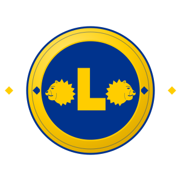
Nosotros Servimos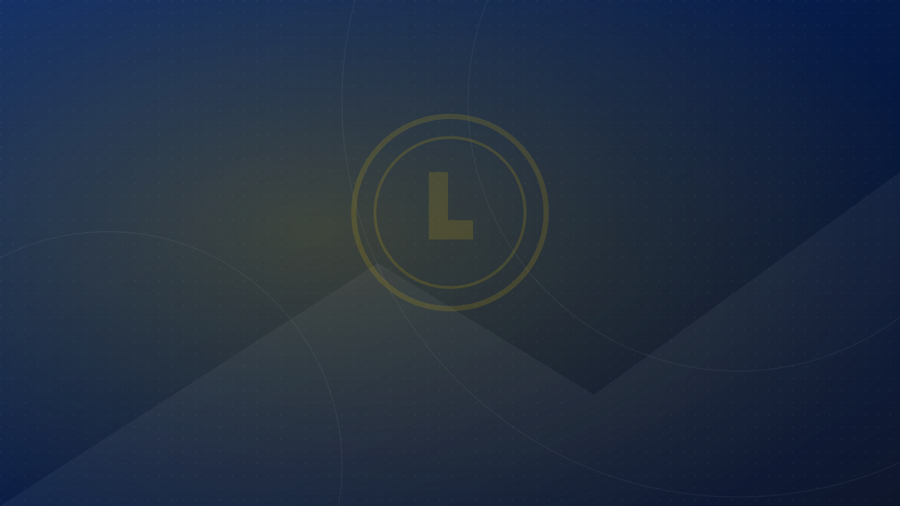
Somos el Club de Leones Temuco Antumalal. Hace más de cuatro décadas que trabajamos, sin fines de lucro, para ir en ayuda de quien más lo necesita en La Araucanía.
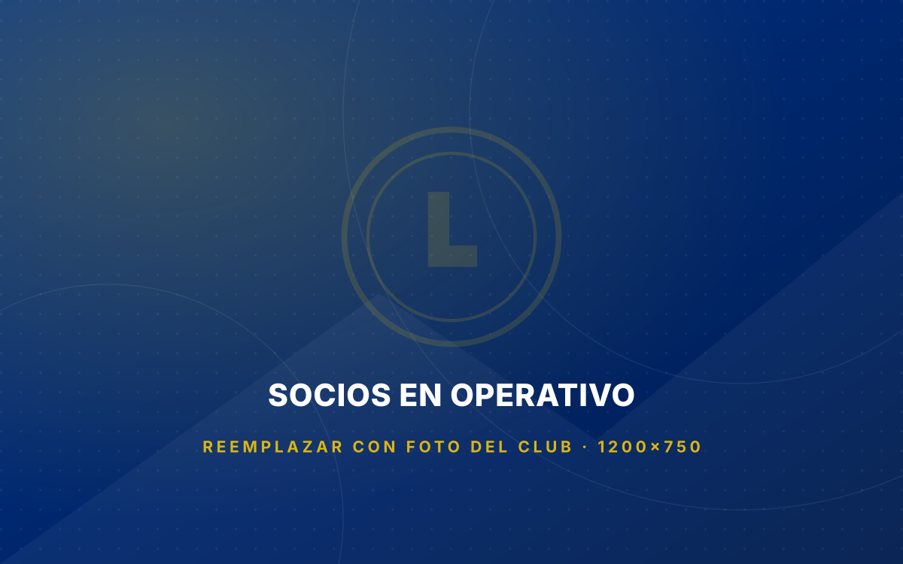
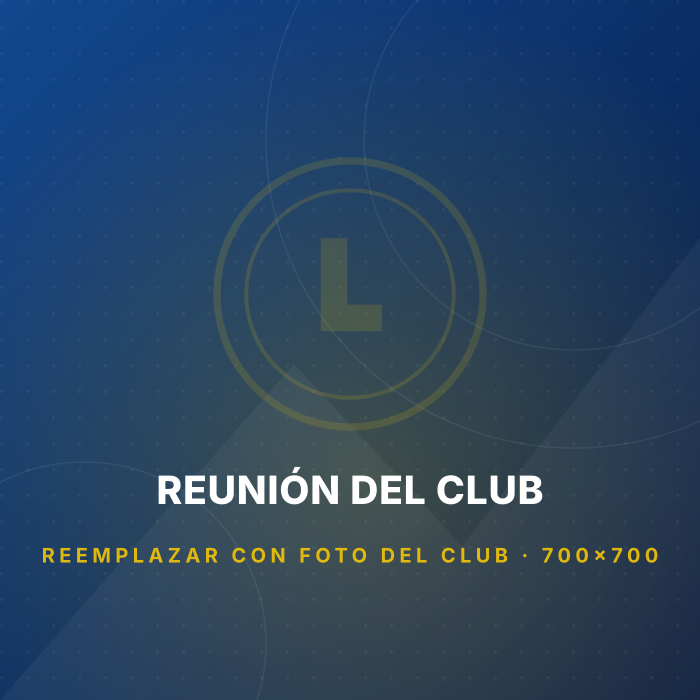
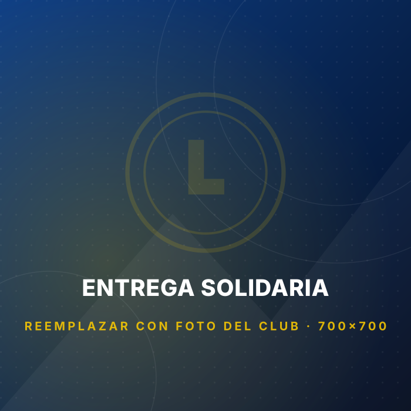
El Club de Leones Temuco Antumalal se funda a la comunidad el 28 de marzo de 1983. Desde entonces nuestro objetivo es uno solo: ir en ayuda del más necesitado.
Formamos parte de Lions Clubs International, la mayor organización de clubes de servicio del mundo, fundada en 1917 y presente hoy con más de 1,4 millones de socios en unos 46.000 clubes de más de 200 países. En Chile pertenecemos al Distrito T-4.
Somos vecinos, profesionales, comerciantes y jubilados de Temuco que donamos nuestro tiempo. Ningún socio recibe remuneración: el 100% de lo recaudado va directo a los programas de servicio.
Los Leones actuamos donde la necesidad es más urgente. Estas son las áreas de servicio que Lions International prioriza en todo el mundo y que aterrizamos en Temuco.
Operativos oftalmológicos, entrega de lentes y pesquisa temprana. Es la causa histórica de los Leones a través del programa SightFirst.
Campañas de detección, control y educación para prevenir complicaciones de una enfermedad con alta prevalencia en la región.
Ollas comunes, canastas familiares y apoyo a comedores. Nadie en nuestra comunidad debería quedarse sin un plato de comida.
Arborización urbana, reciclaje y educación ambiental junto a colegios y juntas de vecinos de Temuco.
Acompañamiento a niñas y niños en tratamiento y a sus familias, aliviando la carga que no se ve.
Respuesta inmediata ante incendios, terremotos e inundaciones: agua, alimento, abrigo y reconstrucción a largo plazo.
Becas escolares, Concurso Cartel de la Paz, campamentos e intercambios juveniles y el programa Leo de voluntariado.
Visitas, actividades recreativas y apoyo material a personas mayores en situación de soledad o vulnerabilidad.
Ningún socio percibe remuneración. Lo recaudado se destina íntegramente al servicio.
Somos parte de una red de 46.000 clubes en más de 200 países y áreas geográficas.
Cada campaña se informa a los socios y a la comunidad con cifras y resultados.
Detectamos necesidades reales de Temuco junto a colegios, consultorios y juntas de vecinos.
La fundación de Lions ha entregado más de US$700 millones en subvenciones desde 1968.
Campañas permanentes y operativos puntuales que ejecutamos durante el año leonístico.
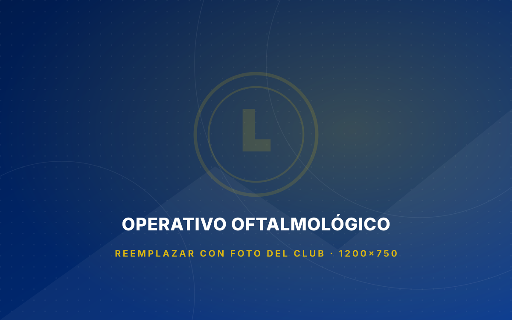
Controles de vista gratuitos y entrega de lentes ópticos a personas sin cobertura, en coordinación con profesionales voluntarios.
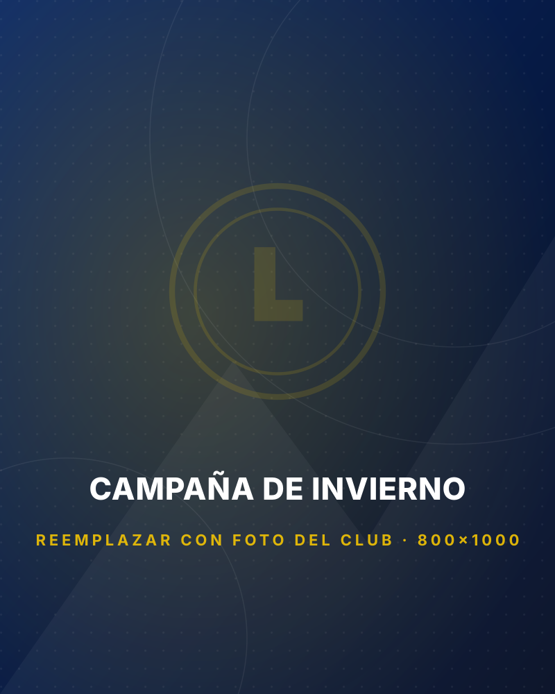
Frazadas, ropa de abrigo y combustible para familias y adultos mayores durante los meses más fríos.
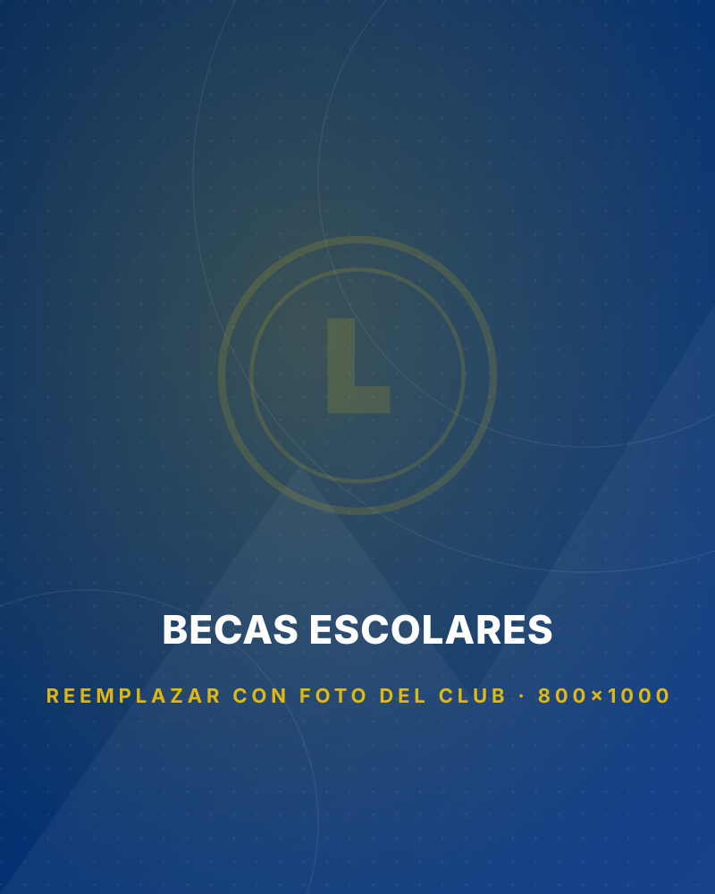
Apoyo a estudiantes destacados de escasos recursos para que no interrumpan su trayectoria escolar.
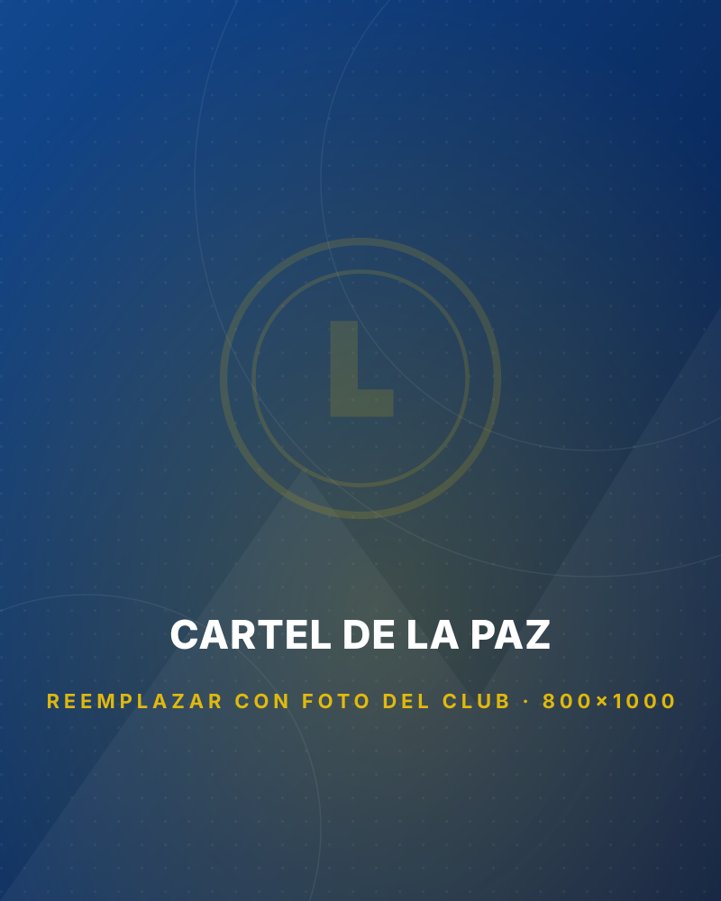
Concurso internacional de Lions donde niñas y niños de 11 a 13 años expresan su visión de la paz.
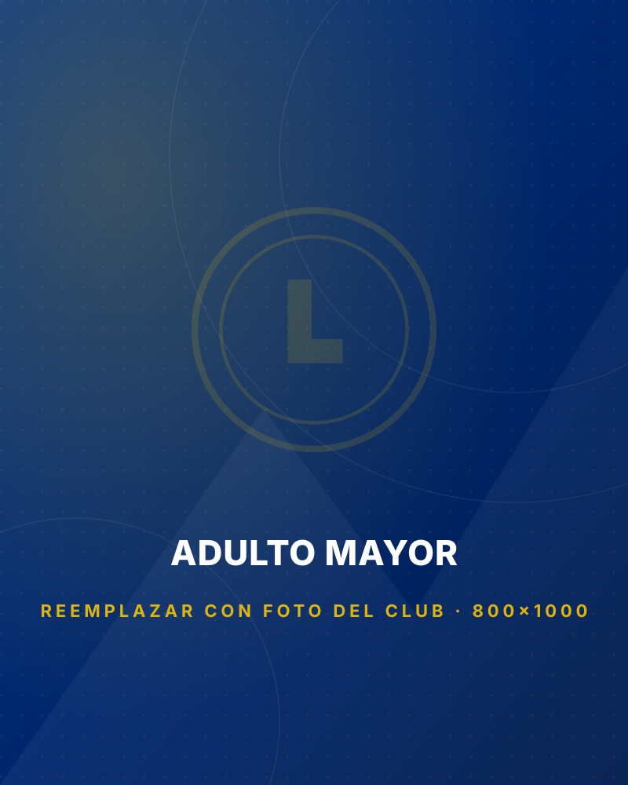
Visitas periódicas, celebraciones y ayuda concreta a personas mayores de la comuna.
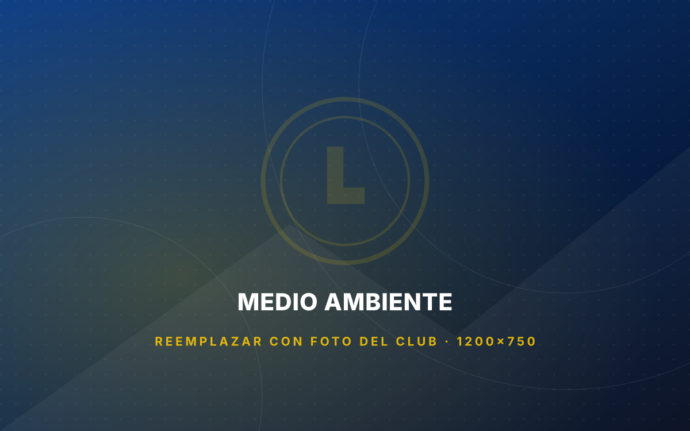
Plantación de árboles nativos, limpieza de espacios públicos y talleres de reciclaje con establecimientos educacionales.
No son declaraciones de buenas intenciones: son los criterios con los que decidimos a quién ayudamos, cómo lo hacemos y de qué manera rendimos cuenta.
“Nosotros Servimos” no es un lema de adorno: es el criterio con el que se resuelve cada solicitud. Antes de decidir, verificamos el caso en terreno.
Cada campaña se informa con cifras a los socios, a la comunidad y al Distrito T-4. Los gastos administrativos salen de las cuotas sociales, nunca de lo recaudado.
Un club se sostiene por la amistad entre quienes lo forman. Sesionamos, trabajamos y celebramos juntos: sin eso, el servicio no se sostiene en el tiempo.
Se ayuda sin exponer a nadie. Resguardamos la identidad y la privacidad de quienes reciben apoyo: nadie tiene que pagar con su imagen la ayuda que recibe.
El club no tiene filiación política ni religiosa. Se sirve a la persona que lo necesita, sin preguntar por su credo, origen ni preferencia.
Las necesidades las detectamos aquí, con vecinos, colegios y consultorios de Temuco. El respaldo es mundial; la decisión de a quién ayudar es de la comunidad.
“No se puede llegar muy lejos en la vida hasta que no se empieza a hacer algo por los demás.”
Melvin Jones, fundador de Lions Clubs International, 1917Se actualiza automáticamente con publicaciones oficiales de Lions International y con la prensa que cubre a los Clubes de Leones en Chile y La Araucanía.
Sesionamos el 2° y 4° lunes de cada mes a las 20:30 h en el Centro de reuniones quincho Martin Lutero. Las actividades abiertas están marcadas.
Cargos elegidos por los socios para el período leonístico en curso.
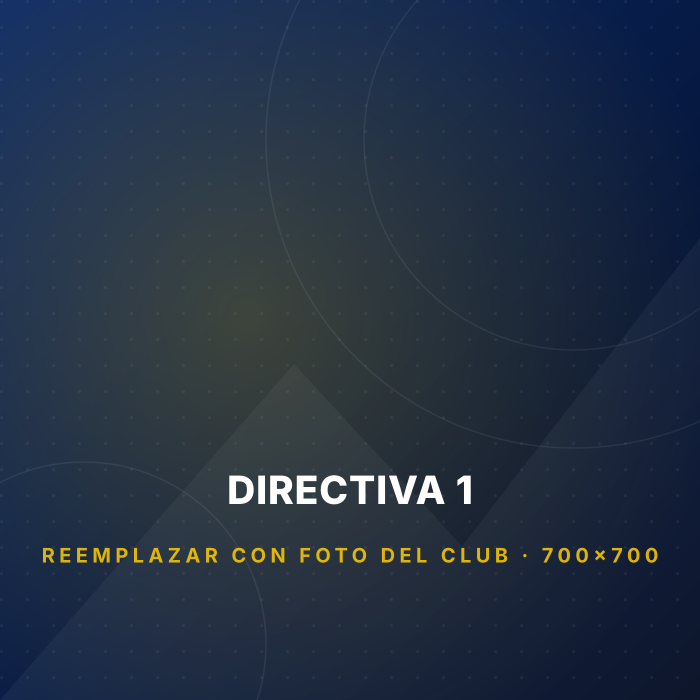
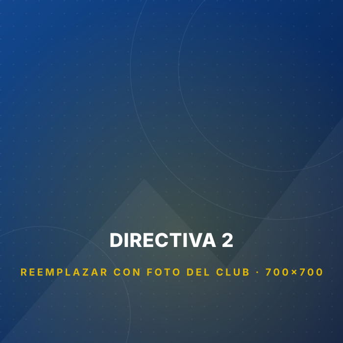
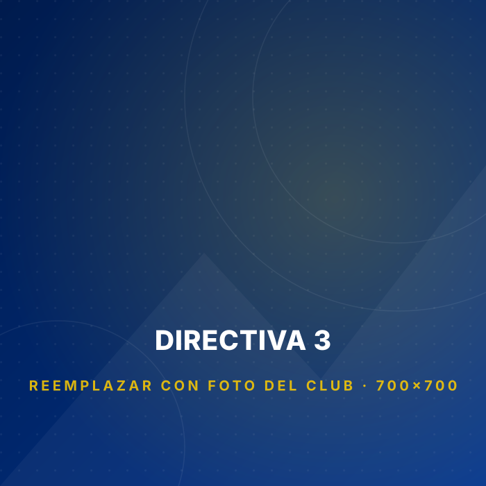
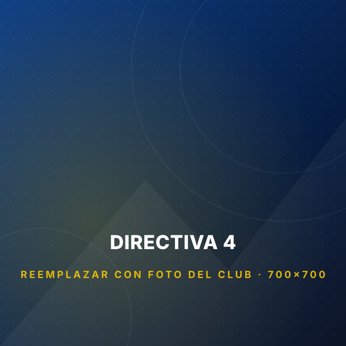
Mi mamá llevaba años sin poder leer bien. En el operativo la atendieron y le entregaron sus lentes el mismo mes. Para nosotros fue enorme.
Trabajamos con el club en la campaña de útiles escolares. Son ordenados, cumplen lo que prometen y se nota que llevan años haciendo esto.
Entré buscando ayudar en algo concreto y me encontré con un grupo de amigos. Cada actividad deja algo que uno se lleva para la casa.
Después del incendio llegaron con frazadas y mercadería sin que nadie se los pidiera. Uno no se olvida de eso.
Como profesional voluntario he participado en varios operativos. La organización es impecable y la gente lo agradece de verdad.
No necesitas dinero ni contactos: necesitas ganas de servir. Ven a conocernos un lunes de sesión, sin compromiso, y decide después.
Todo aporte se destina íntegramente a los programas de servicio del club.
Envía el comprobante al correo de tesorería indicando tu nombre y, si quieres, a qué campaña deseas destinar el aporte.
Lentes, alimentos no perecibles, ropa de abrigo, útiles escolares o insumos médicos en buen estado.
Si eres oftalmólogo, óptico, enfermero, dentista, profesor o contador, tu tiempo vale tanto como un aporte.
Empresas y comercios pueden auspiciar un operativo completo. Coordinamos difusión y rendición.
También puedes aportar directamente a la Fundación Internacional de Clubes de Leones.
Es una organización de servicio voluntario sin fines de lucro. Lions Clubs International se fundó en 1917 y hoy reúne a más de 1,4 millones de socios en unos 46.000 clubes de más de 200 países. Nuestro lema es "Nosotros Servimos".
Escríbenos por el formulario de contacto o por WhatsApp y te invitamos a una sesión. Se ingresa por presentación de un socio y aprobación del directorio. No hay cuota de incorporación: solo una cuota mensual que financia la operación del club.
El 2° y 4° lunes de cada mes a las 20:30 horas, en el Centro de reuniones quincho Martin Lutero, Temuco. Confírmanos antes de asistir por si hay cambios de fecha.
No. Se requiere ser mayor de edad y tener disposición a servir. Buscamos diversidad de oficios y edades. Los jóvenes entre 12 y 30 años también pueden participar a través del programa Leo.
Dos sesiones mensuales de alrededor de dos horas, más la participación en los operativos y campañas que cada socio pueda apoyar. Cada uno aporta según su realidad.
Íntegramente a los programas de servicio. Ningún socio recibe remuneración y los gastos administrativos se financian con las cuotas sociales, no con lo recaudado en campañas.
Sí. Escríbenos detallando la situación y los datos de contacto. Cada solicitud se revisa en sesión y, cuando corresponde, se verifica en terreno antes de resolver.
Por supuesto. Coordinamos el alcance del auspicio, la difusión de la marca en la actividad y la rendición del uso de los fondos. Contáctanos y conversamos.
Si quieres postular como socio, solicitar ayuda, auspiciar una campaña o simplemente saber más del club, escríbenos.